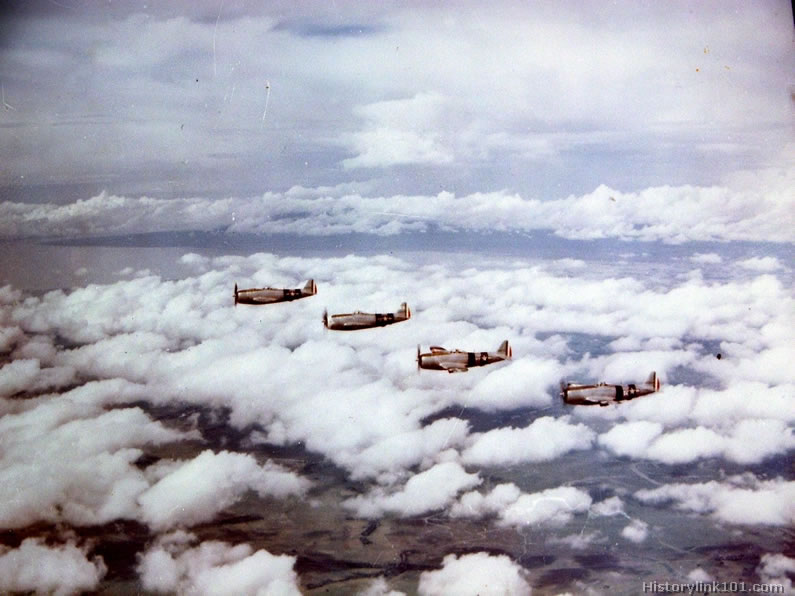

Operaciones en el pacifico. el 16 de julio de 1945 el escuadron 201 entro en servicio en el pacifico. El escuadron estuvo conformado por 30 pilotos mexicanos que sirvieron de apoyo a las feurzas aereas de los estados unidos en mas de 95 misiones, entre las que participaron en unas 53 misiones apoyo a tropas en tierra, en apoyo a la infanteria de los estados unidos y el ejercito filipino entre el 4 de junio de 1945.
Las guilas aztecas acumularon unas 1966 horas en misiones de combate aereo en los dos meses de su participacion en la guerra, desde su entrada al servicio el 16 de junio de 1945 hasta el 15 de agosto en 1945 cuano Japon anuncio su rendicion. La segunda guerra mundial fue un conflicto belico a escala mundial que se prolongo entre los años 1939 y 1945, costando la vida de unas 75 millones de personas e incuantiicables perdidas materiales
